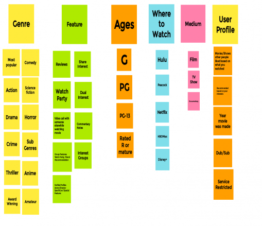
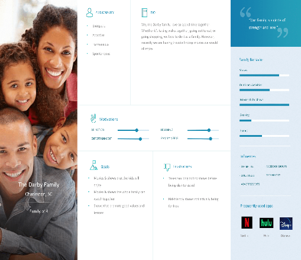
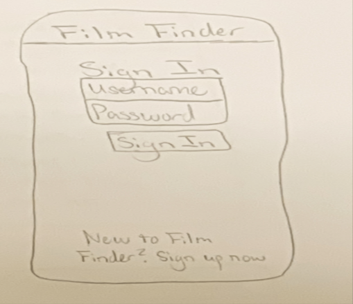
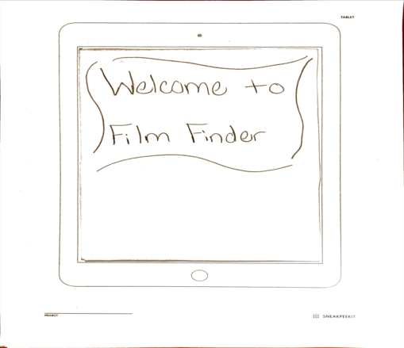

Problem Statement: Film Finder

Users often have limited time when they ask themselves what they want to watch, and they scroll through shows and movies aimlessly on streaming services because the selection is so broad. They then often find themselves referring to friends and family to find out what they should watch, spending even more time. Our solution is to provide a selection of films that match the users interests to save them time.
Affinity Diagram: Film Finder
My group discussed ideas and designs together regarding our film finder app, so when we finally launch the app, it will be the best film app on the app store.
Persona: Darby Family
A persona of a typical film finder app user.
Sketch: Film Finder
Rough image of how the application may look.
Paper Prototype
A paper walkthrough to setup a watch party with friends in our app.
High-fi Protoype: Film Finder App

A scenario and multiple tasks to test functions for our prototype.